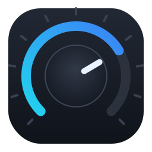

Community controller software for PCPanel USB audio devices — per-app volume, mute, OBS, media and more.
Looking up the latest release…
Download the installer and run it — no admin rights needed. It installs per-user and can start on sign-in.
Built-in one-click updates: when a new version ships, the in-app notification updates and restarts for you.
Download the disk image for your chip. The app is unsigned, so Gatekeeper needs a one-time right-click → Open.
macOS support is community-contributed and experimental — see the macOS notes.
Best-effort. All formats need a one-time udev rule for device access (the .deb adds it for you) — see the Linux guide.
Installs from this repository, so it updates through your software centre or flatpak update. Pick a channel:
flatpak install --user https://nvdweem.github.io/PCPanel/com.getpcpanel.PCPanel.stable.flatpakref
Bleeding-edge snapshot channel instead:
flatpak install --user https://nvdweem.github.io/PCPanel/com.getpcpanel.PCPanel.snapshot.flatpakref
A single self-contained file — best for immutable distros. It self-updates in place from the in-app notification.
chmod +x PCPanel-*.AppImage && ./PCPanel-*.AppImage
sudo apt install ./pcpanel_*_amd64.deb
Updates come through your package manager (no in-app update).
All downloads & the changelog are on the releases page.